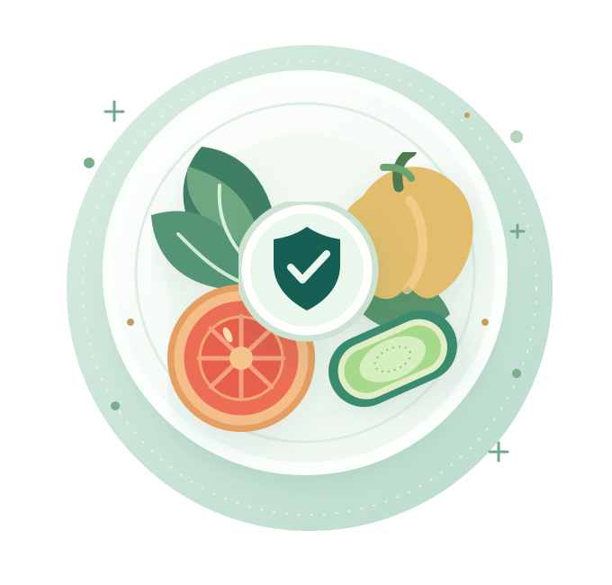
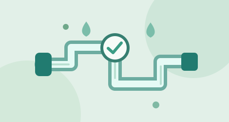

PRÓXIMAMENTE
FUNDAMENTOS · INOCUIDAD
Buenas Prácticas de Manufactura y NOM-251
Los fundamentos de higiene, instalaciones, personal y controles esenciales para fabricar alimentos seguros.
FORMACIÓN PROFESIONAL EN INOCUIDAD
Capacitación práctica en inocuidad alimentaria, calidad y mejora continua. Conectamos los principios técnicos con los desafíos reales de la industria de alimentos.

APRENDE CON PROPÓSITO
Explora las áreas que estamos preparando. Los temarios, fechas, modalidades y precios definitivos se anunciarán antes de abrir inscripciones.
Los fundamentos de higiene, instalaciones, personal y controles esenciales para fabricar alimentos seguros.
Aprende a reconocer peligros, evaluar riesgos y estructurar controles preventivos efectivos.
Herramientas para auditar procesos, documentar hallazgos y dar seguimiento a acciones correctivas.

PRÓXIMAMENTEConceptos para diseñar, ejecutar y verificar programas eficaces de limpieza en la industria alimentaria.
Los cursos mostrados son propuestas iniciales; todavía no hay inscripciones ni compras habilitadas.
NUESTRA METODOLOGÍA
Queremos que cada lección se convierta en decisiones más claras, procesos más robustos y una cultura preventiva que se sostenga en el tiempo.
La inocuidad no es solo cumplir una norma. Es saber por qué existe cada control y cómo mantenerlo eficaz.
Explicaciones claras, referencias técnicas y conceptos esenciales.
Ejemplos de planta, análisis de escenarios y ejercicios de aplicación.
Herramientas que ayudan a convertir el conocimiento en mejoras observables.
FORMACIÓN FLEXIBLE
Estamos diseñando formatos que se adapten a profesionales y equipos de trabajo.
Contenido organizado en módulos para avanzar a tu propio ritmo.
EN PLANEACIÓNEspacios para preguntar, analizar casos y aprender en comunidad.
EN PLANEACIÓNProgramas enfocados en retos operativos y necesidades del equipo.
EN PLANEACIÓNQUIÉNES SOMOS
Food Safety Academy nace con la intención de acercar la formación técnica en inocuidad alimentaria a quienes operan, supervisan, verifican y mejoran los procesos de la industria.
Creemos en el conocimiento accesible, aplicable y basado en buenas prácticas, con especial atención a los desafíos cotidianos de producción y aseguramiento de calidad.
RESOLVEMOS TUS DUDAS
Conoce cómo estamos preparando nuestros programas y qué puedes esperar de la academia.
Todavía no. Esta página presenta el proyecto y un catálogo preliminar. Anunciaremos precios, fechas y enlaces de inscripción una vez que los programas estén listos.
Estamos considerando ambas modalidades. Cada ficha de curso indicará su formato, duración y requisitos antes del lanzamiento.
Planeamos ofrecer constancias o certificados de finalización en los cursos que correspondan. Su alcance y los requisitos se indicarán antes de inscribirse. No equivalen automáticamente a certificaciones oficiales, DC-3 ni acreditaciones gubernamentales.
Es una de las modalidades previstas. Puedes preparar una consulta para conversar sobre las necesidades de capacitación de tu equipo.
HABLEMOS DE CALIDAD
¿Te interesa recibir información de un curso o explorar capacitación para tu equipo? Prepara tu consulta y personalizaremos nuestros canales de atención antes del lanzamiento.